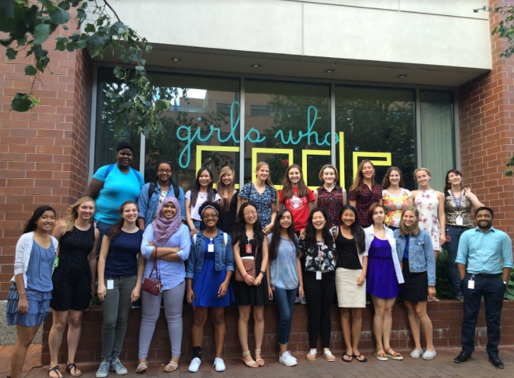
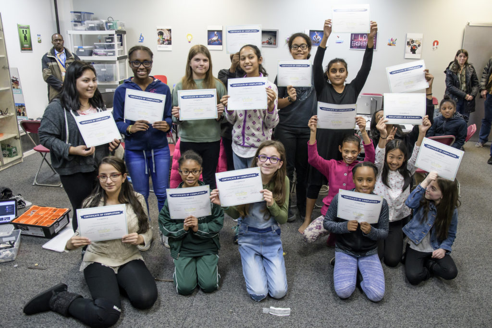
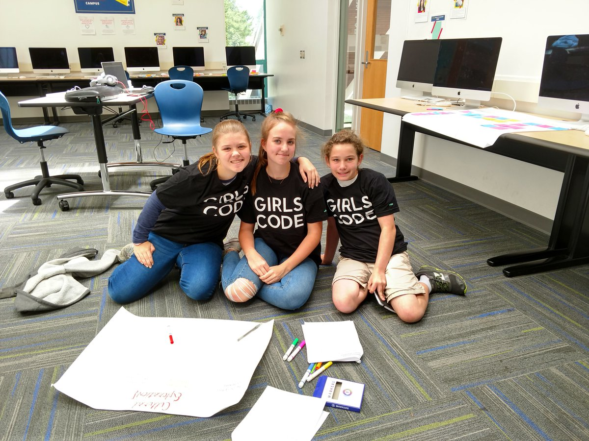

Girls Who Code is a non-profit organization whose mission is to close the gender gap in technology. In the past six years, they have reached more than 90,000 girls. With the help of donations and corporate partnerships, Girls Who Code is able to provide programs to middle school and high school aged girls. Currently they have Summer Immersion Programs, Campus Programs, and Clubs. Additionally, they publish Computer Science related books and offer Women in Tech lesson plans for school.
Programs
Summer Immersion Program:

Girls Who Code Summer Immersion Program is a seven week coding camp for incoming junior and senior girls. The non-profit organization wants to close the gender gap in the tech world and has girls located at leading tech companies all over America. Some hosts of the summer immersion program include; Kate Spade New York Foundation, Adobe, AIG, Morgan Stanley, Goldman Sachs, Twitter, Sephora, and more! The program is completely free, and girls dip their toes into the basics of computer science. During the summer girls meet important guest speakers, go on trips, and are exposed to the tech world. It’s an amazing opportunity for young girls!
Clubs:

Girls Who Code also has an after school program that is also completely free. It is offered to 3rd-5th grade girls and 6th-12th grade girls. Clubs are easy to startup and Girls Who Code provides the curriculum! The girls learn the values of a sisterhood as well as the importance of computer science.
Campus:

Campus is an intense 2-week summer program that offers beginner and advanced computer science courses to high school and middle school girls. Some examples are “Website Design & Development” and “Wearable Tech & Fashion Design”. Unlike the SIP, it costs money, but Girls Who Code offers scholarships to cut down the costs. The Campus program teaches girls coding and introduce them to a sisterhood of girls!